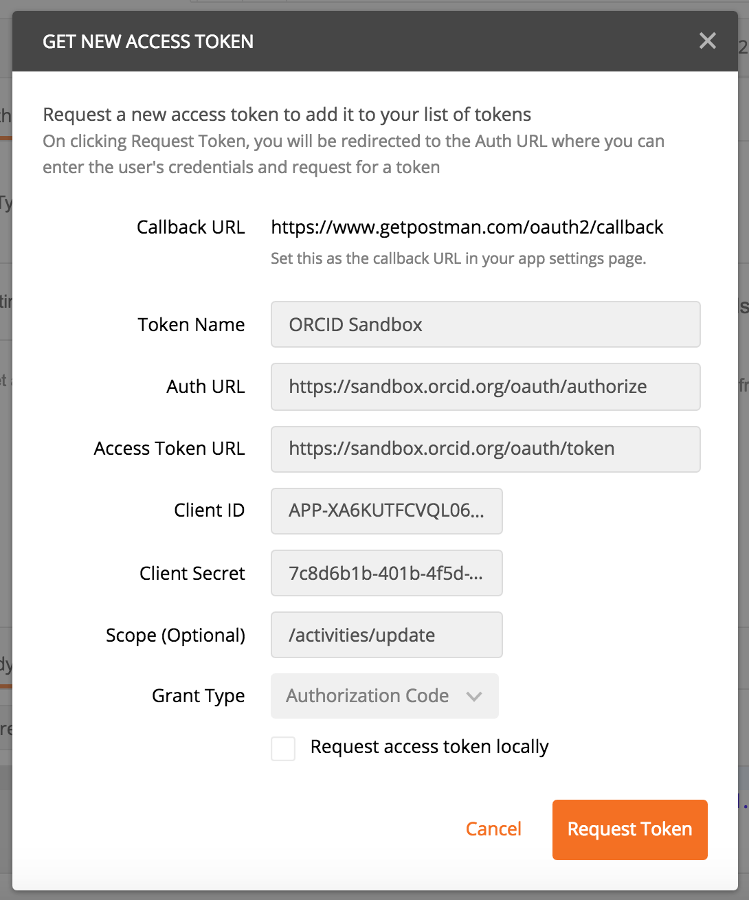
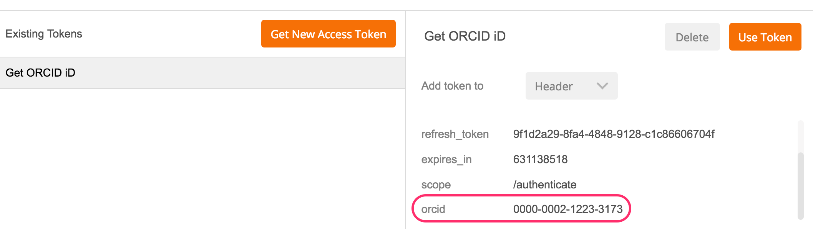

6. AUTHENTICATE iDs
In our first few API requests, we already knew which ORCID iD to use (our own!) and we read/searched public information, which didn't require any permission from the user.
In practice, you'll need to gather up iDs for researchers whose ORCID records your interested in. The best way to do this is to get authenticated iDs from those researchers.
In this section, we'll use the Sandbox Member API to get an authenticated ORCID iD. This process can also be completed using the Public API.
About authenticated iDs
ORCID is about disambiguation,it's important that you get the correct iD for each researcher. The best way to do this is to collect Authenticated ORCID iDs, which means that each researcher signs into their ORCID account and authorizes your system to obtain their iD. Learn more about Authenticated iDs
Get an authenticated iD
Getting an Authenticated iD from a user requires generating an OAuth 2.0 access token using an Authorization Code grant type.
This grant type allows a user to give a website or application access to account information stored on another site, without giving that site their password.
If you've ever signed into a site using Google or Facebook instead of your credentials for that particular site, you've already used the same process!
- In the Postman Builder tab, click the + sign at the top of the screen to create a new request.
- Click Authorization, then set the Type dropdown to OAuth 2.0

- Click Get New Access Token
- Enter the following settings:
| Field | Value |
|---|---|
| Token Name | Get ORCID iD |
| Auth URL | https://sandbox.orcid.org/oauth/authorize |
| Access Token URL | https://sandbox.orcid.org/oauth/token |
| Client ID | APP-XA6KUTFCVQL0622C(Demo client ID created for this workshop) |
| Client Secret | 7c8d6b1b-401b-4f5d-9b8b-b8108c6e197c(Demo client secret created for this workshop - do not share API client secrets!) |
| Scope | /authenticate This scope allows getting a user's authenticated ORCID iD. Other scopes are also available - see full list of ORCID Scopes |
| Grant Type | Authorization Code |
- Leave Request access token locally unchecked and click Request Token
 - An ORCID sign-in screen will appear; sign into the Sandbox ORCID account you created earlier.

- A screen asking you to authorize ORCID to share your iD with an external application will appear; click Authorize

- Beneath Existing Tokens, click Get ORCID iD. The ORCID iD for the user who signed in will appear at right.

An Access Token is also generated, however, this token is not valid for any additional API requests.